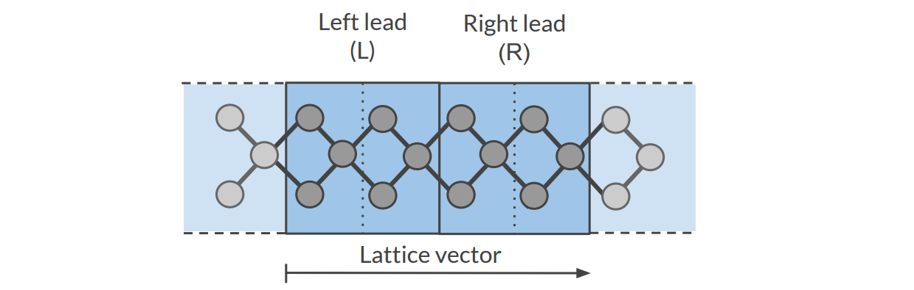
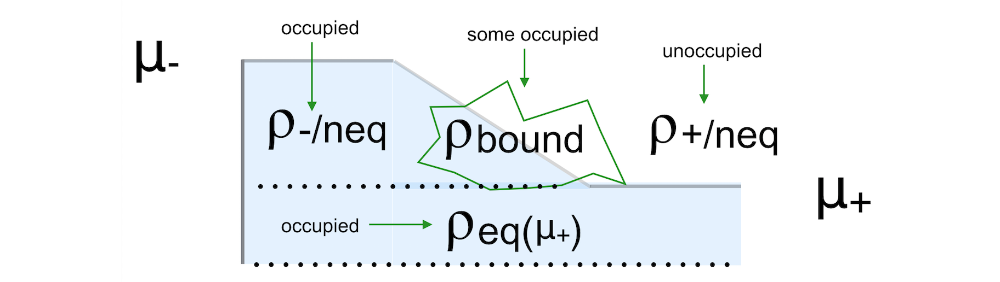

Electronic Transport (NEGF)¶
See also
Some examples are available in the $AMSHOME/examples/band directory and are discussed in the Examples section.
| Example: Main NEGF flavors |
| Example: NEGF with bias |
Note
In the BAND-GUI it is possible to choose between three NEGF methods (flavors):
- Self consistent
- This is the internal BAND-NEGF implementation, which is described in this page.
- Self consistent + align
- This is the internal BAND-NEGF implementation with an extra alignment-run (workflow step 3a)
- Non self consistent
- Computationally cheap method, equivalent to the DFTB-NEGF approach with \(H\) and \(S\) matrix elements computed by BAND (instead of DFTB).
Transport with NEGF in a nutshell¶
The Non-Equilibrium Green’s Functions formalism (NEGF) is a theoretical framework for modeling electron transport through nano-scale devices. Electron transport is treated as a one-dimensional coherent scattering process in the “scattering region” for electrons coming in from the electrodes:

Our goal is to compute the transmission function \(T(E)\), which describes the rate at which electrons of energy \(E\) are transferred from the left electrode to the right electrode by propagating through the scattering region. From the transmission function we can calculate the electric current for given Bias Voltage \(V\) applied between the electrodes:
where \(f(E)\) is the Fermi-Dirac distribution function for a given temperature, and \(\mu_L\) (\(\mu_R\)) is \(\epsilon_F + eV/2\) (\(\epsilon_F - eV/2\)), \(\epsilon_F\) being the Fermi energy of the electrodes.
The transmission function \(T(E)\) can be computed from the Green’s function of our system.
The Green’s function \(G(E)\) of the scattering region is obtained solving the following equation:
where \(S\) is the overlap matrix, \(H\) is the Hamiltonian and \(I\) is the identity matrix. The Hamiltonian is composed as follows (L, C and R denote the left lead, the central region and the right lead respectively):
The two self-energies \(\Sigma_L\) and \(\Sigma_R\) model the two semi-infinite electrodes.
The transmission function \(T(E)\) can be calculated from the Green’s function \(G(E)\) and the so-called broadening matrices \(\Gamma_L(E)\) and \(\Gamma_R(E)\):
The broadening matrix being
Self consistency¶
The density matrix is determined self consistently [1]:
From a guess of the density matrix the corresponding KS Hamiltonian is calculated. This Hamiltonian is aligned, and then the NEGF Hamiltonian in the complex plane is constructed by adding the self energies, representing the influence of the electrodes. From the resulting Green’s function a new density matrix follows.
From the difference between input and output density a next input is guessed. This is repeated until the input and output densities converge.
For the alignment of the Hamiltonian there are two shifts. The first shift aligns the potential in the leads to the electrodes.
The second and usually smaller shift results from the alignment run. A shift \(\Delta\) is applied globally
Contour integral¶
Without bias the density matrix follows from
As the Green’s function is singular on the real axis we add a small imaginary value (eta) to the energy. Still, the integrand will be very wild function, and it is numerically better to do a contour integral instead.
Fig. 4 Figure: BAND uses a rectangular contour in the complex energy plane to integrate the (integrand of the) density matrix. The integrand also needs to be evaluated in the enclosed FD poles (three in this picture).
Gate potential¶
There is no direct key for the gate potential. You can model this with the FuzzyPotential key. Setting up the gate potential for NEGF is most conveniently done with the GUI.
Bias potential¶
When there is a bias specified there are two important things to keep in mind.
First of all you need to define a ramp potential. In the negative lead this should have the value +V/2 and in the negative lead -V/2. The ramp should smoothly go from one to the other value. For metals one could start the ramp at the surface atoms of the lead material. For semi-conductors it is less clear. The ramp potential can be specified with the FuzzyPotential key. The GUI can be helpful here.
Secondly, the expression for the density is different from the zero-bias case:
The first (equilibrium) term is calculated with a contour integral as before, the second (non-equilibrium) part cannot be calculated with a contour integral. Instead, an integral in the complex plane (close to the real axis) is performed, the range covering the bias energy window.
See also
PhD Thesis of C. Verzijl (BAND-NEGF developer)
Workflow¶
The computation of the transmission function \(T(E)\) within the BAND-NEGF [1] formalisms requires three or four individual simulations.
Tip
Use ADFInput (GUI) to set up your BAND-NEGF calculation (see the BAND-NEGF GUI tutorial)
- 1): Lead calculation
A 1D-periodic BAND calculation of the lead (including StoreHamiltonian2):
A tight binding (TB) representation is calculated for the overlap (\(S(R=0)\) and \(S(R=a)\)) and Fock matrix (\(H(R=0)\) and \(H(R=a)\)). This is not an approximation provided that the functions do not extend beyond the neighboring cells. You should choose a sufficiently large super cell for this to be true. For this reason we recommend setting the SoftConfinement Quality to Basic, thus reducing the range of the functions.
- 2): SGF calculation
- A small program that determines the fermi energy \(\epsilon_F\) corresponding to the TB representation, and the specified temperature. This fermi energy is typically a bit higher than the one from the lead calculation. This also tests the contour integration.
- 3a): Alignment run (optional)
- The idea is to fill the central region with bulk material. Then one expects to have zero charge in the central region. In practice this is not exactly true. In the alignment run the shift is determined that makes the central region neutral. This global shift is to be used in the next run.
- 3b): Transport calculation
- Computes the NEGF transmission function \(T(E)\). The density matrix is determined fully self-consistently. Without alignment (3a) one should set
NEGF%ApplyShift2toFalse.
To get the current as a function of bias potential you need to repeat calculation 3b for a various bias potentials.
Input options¶
SGF Input options¶
SGF is a small separate program. An input looks like:
$AMSBIN/sgf << eor
TITLE Test for NEGF inputs
SAVE SIGMA
SURFACEGF
SCMCode True
KT 0.001
ContourQuality normal
END
eor
It looks for a file RUNKF and the output is a file named SigmaSCM. The only important parameter is KT which is the Boltzmann constant times the temperature in Hartree. The other parameter of interest is the ContourQuality, which can be set to Basic,Normal,Good,VeryGood, or Excellent.
NEGF Input options (no bias)¶
The NEGF functionality is controlled by the NEGF block key.
NEGF
LeadFile string
SGFFile string
ContourQuality [basic | normal | good | verygood]
EMin float
EMax float
NE integer
End
NEGFType: Block Description: Options for the NEGF (non-equilibrium green function) transport calculation. LeadFileType: String Default value: Description: File containing the tight binding representation of the lead. SGFFileType: String Default value: Description: The result from the SGF program. Contains the Fermi energy of the lead. ContourQualityType: Multiple Choice Default value: good Options: [basic, normal, good, verygood] Description: The density matrix is calculated numerically via a contour integral. Changing the quality influences the number of points. This influences a lot the performance. EMinType: Float Default value: -5.0 Unit: eV Description: The minimum energy for the transmission grid (with respect to the Fermi level of the lead) EMaxType: Float Default value: 5.0 Unit: eV Description: The maximum energy for the transmission grid (with respect to the Fermi level of the lead) NEType: Integer Default value: 100 Description: The number of energies for the transmission energy grid.
The following are expert / technical options:
NEGF
CheckOverlapTol float
Eta float
ApplyShift1 Yes/No
ApplyShift2 Yes/No
YContourInt float
DEContourInt float
End
NEGFType: Block Description: Options for the NEGF (non-equilibrium green function) transport calculation. CheckOverlapTolType: Float Default value: 0.01 Description: BAND checks how well the TB overlap matrix S(R=0) represents the overlap matrix in the lead region. Elements corresponding to the outer layer are neglected, because when using a frozen core they have bigger errors. EtaType: Float Default value: 1e-05 Description: Small value used for the contour integral: stay at least this much above the real axis. This value is also used for the evaluation of the Transmission and dos. ApplyShift1Type: Bool Default value: Yes Description: Apply the main shift, obtained from comparing matrix elements in the leads with those from the tight-binding run. Strongly recommended. ApplyShift2Type: Bool Default value: Yes Description: Apply the smaller alignment shift. This requires an extra alignment run. Usually this shift is smaller. YContourIntType: Float Default value: 0.3 Description: The density is calculated via a contour integral. This value specifies how far above the real axis the (horizontal part of the) contour runs. The value is rounded in such a way that it goes exactly halfway between two Fermi poles. There is a trade off: making it bigger makes the integrand more smooth, but the number of enclosed poles increases. For low temperatures it makes sense to lower this value, and use a smaller deContourInt. DEContourIntType: Float Default value: -1.0 Description: The energy interval for the contour grid. Defaults depends on the contour quality
NEGF Input options (with bias)¶
With a bias potential there are some extra keys.
NEGF
BiasPotential float
NonEqDensityMethod integer
BoundOccupationMethod integer
YRealaxisInt float
DERealAxisInt float
End
NEGFType: Block Description: Options for the NEGF (non-equilibrium green function) transport calculation. BiasPotentialType: Float Default value: 0.0 Description: Apply a bias potential (atomic units). Can be negative. One has to specify the ramp potential with the FuzzyPotential key. This is mostly conveniently done with the GUI. NonEqDensityMethodType: Integer Default value: 1 Description: See text. BoundOccupationMethodType: Integer Default value: 1 Description: See text. Only relevant with NonEqDensityMethod equal 2 or 3. YRealaxisIntType: Float Default value: 1e-05 Description: The non-Equilibrium density is calculated near the real axis. DERealAxisIntType: Float Default value: -1.0 Description: The energy interval for the real axis grid. Defaults depends on the contour quality.
NonEqDensityMethodLet us introduce some terms [2]. First of all the total density in the bias window (ignoring occupation)
\[D = \frac{1}{2\pi} \int A \; (f_--f_+)\]And then there are the side resolved densities
\[D_{+/-} = \frac{1}{2\pi} \int A_{+/-} \; (f_--f_+)\]The issue here is that the side resolved densities do not sum to the total one
\[D = D_{+} + D_{-} + D_\text{bound states}\]The NonEqDensityMethod is about how these integrals are calculated . With option 1, or 2 a contour integral is used for D: they are essentially the same. However, when choosing option 2, you can choose a BoundOccupationMethod, leading to other physics. If set to 3, the total density in the bias window (D) will be calculated near the real axis: this way one avoids the possibility of a negative nr. of bound states (deviating from [2]).
BoundOccupationMethodOnly relevant with NonEqDensityMethod equal 2 or 3. If set to one, the density of bound states (ignoring occupation) is simply multiplied by a half. If set to two, atoms closer to the negative lead will get a higher occupation [2]. Atoms coupled to the right lead will have a low occupation. For this we recommend setting NonEqDensityMethod to 3, to avoid a possible negative number of bound states.
Fig. 5 Figure: The non-equilibrium density consists of three parts: the left and right parts (ρ-/neq and ρ+/neq) and the bound states (ρbound). We want to know the occupied part.
Setting the method BoundOccupationMethod to 1, leads to
\[\rho = \rho(\mu_+) + \rho_\text{-/neq} + \frac{1}{2}\rho_\text{bound}\]By setting the method to 2, each atom gets its own weight in the density matrix
\[\rho_{ij} = \rho_{ij}(\mu_+) + \rho_\text{-/neq} + \sqrt{w_i w_j} \rho^\text{bound}_{ij}\]with [2]
\[w_i = \frac{\text{Tr} [D_-]_i}{\text{Tr} [D_-]_i + \text{Tr} [D_+]_i}\]These weights are the same for all functions on an atom. The intended effect is: bound states that are coupled more strongly to the negative electrode get a higher occupation than the ones that are coupled more strongly to the positive electrode.
To summarize here are three reasonable settings
NonEqDensityMethod BoundOccupationMethod intention 1 1 Multiply the bound states with a half 2 2 Occupy bound states with atom-resolved \(w_i\) 3 2 … and prevent a negative nr. of bound states
To get the current from a calculation you can use amsprep:
$AMSBIN/amsreport RUNKF 'NEGF%current'
NEGF Input options (alignment)¶
For the (optional) alignment run there are some extra keys.
NEGF
DoAlignment Yes/No
Alpha float
AlignChargeTol float
CDIIS Yes/No
End
NEGFType: Block Description: Options for the NEGF (non-equilibrium green function) transport calculation. DoAlignmentType: Bool Default value: No Description: Set this to True if you want to do an align run. Between the leads there should be lead material. The GUI can be of help here. AlphaType: Float Default value: 1e-05 Description: A charge error needs to be translated in a potential shift. DeltaV = alpha * DeltaQ AlignChargeTolType: Float Default value: 0.1 Description: In an alignment run you want to get the number of electrons in the center right. This number specifies the criterion for that. CDIISType: Bool Default value: No Description: Make the normal DIIS procedure aware of the align charge error
Troubleshooting¶
The self consistent approach, unique to BAND, may be difficult to converge. If this is true for the alignment run it can be decided to skip this run. For the final transport run, here are some tips / considerations.
- Use a SZ basis for the metal atoms
- Restart (the density matrix) from the result of a smaller (such as the SZ) basis. (See “Save DensityMatrix” and the Restart key)
- Restart (the density matrix) from the result obtained with a smaller bias (only relevant for calculations with bias potential).
- Setting NEGF%BoundOccupationMethod to 2 (and NEGF%NonEqDensityMethod to 3) might help. Note that this affects the physics: you are differently occupying the bound states.
- Use a better NEGF%ContourQuality (there comes a computational price tag with this).
If everything fails it is possible to use BAND in a non-self consistent way, similar to the way DFTB-NEGF works. This option is available via the GUI.
Miscellaneous remarks on BAND-NEGF¶
- You should make sure that your results are converged with respect to the number of lead repetitions; the results should not change significantly if you increase the number of lead repetitions.
- It’s good practice to include at least one lead repetition in the central region.
Store tight-binding Hamiltonian¶
Let us consider a Fourier transformation of a 1D Bloch matrix
In (the tight-binding) case that the functions do not extend beyond the neighboring cells only S(R=0) and S(R=a) are nonzero. (And S(R=-a) is equivalent to S(R=a))
StoreHamiltonian2 Yes/No
StoreHamiltonian2Type: Bool Default value: No Description: determine the tight-binding representation of the overlap an fock matrix. Used for (at least) NEGF.
Adding StoreHamiltonian2 to the input cause band to determine the tight-binding representation of the overlap an fock matrix. Currently this only works for 1D periodic systems. For the overlap matrix you will get two parts. The first \(S(R=0)\) is the (symmetric) overlap matrix of atoms in the unit cell. The second \(S(R=a)\) is a non symmetric matrix describing the coupling of functions in the central cell with functions in its right neighboring cell. On the RUNKF file you will find the TB representations of the overlap and Hamiltonian stored in the ‘Matrices’ section as “S(R)” and “H(R)”, being dimensioned (nBas,nBas,2).
References
| [1] | (1, 2) C. J. O. Verzijl and J. M. Thijssen DFT-Based Molecular Transport Implementation in ADF/BAND, J. Phys. Chem. C, 2012, 116 (46), pp 24393–24412. |
| [2] | (1, 2, 3, 4) Rui Li, Jiaxing Zhang, Shimin Hou, Zekan Qian, Ziyong Shen, Xingyu Zhao, Zengquan Xue, A corrected NEGF + DFT approach for calculating electronic transport through molecular devices: Filling bound states and patching the non-equilibrium integration, Chemical Physics 336 (2007) 127-135. |